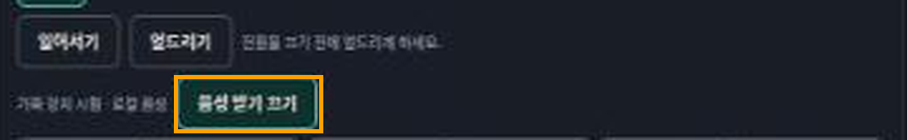
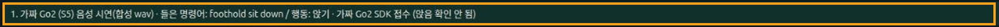

음성 명령 노트북 시험 정리
시험 2026-11-24 ~ 25 · 정리 2026-11-26 · 로봇 없이 노트북 한 대에서 팀 서버 · 팀 로봇 프로그램 (foothold_agent) · 팀 앱 에 가짜 Go2 를 꽂아 돌린 시험 · 팀 dev 1feb63c5 기준 개인 사본 (팀 저장소에 커밋 · push 하지 않음)
- 무엇을 했나: 합성 음성 파일을 노트북에서 받아쓰고 (Vosk), 알아들은 명령을 팀 서버 → 팀 로봇 프로그램 → 가짜 Go2 까지 보내 화면에 결과가 뜨는지 봤다. 실제 로봇 · 마이크는 쓰지 않았다.
- 엎드리기 · 일어서기 (2 · 3 절): 음성 한 마디마다 기존 자세 요청이 한 번 나가고, 가짜 Go2 의 측정 자세로 완료가 확인돼 화면 자세가 서 있음 → 엎드림 → 서 있음으로 바뀌었다.
- 그 밖의 말 (3 절): 앉기 · 정지 · 부정문 · 평소 말에서는 요청이 나가지 않았다 (이번에 넣은 파일 기준).
- 앉기 · 앉은 자세에서 일어서기 (4 절): 요청이 가짜 Go2 의 Sit · RiseSit 호출까지 가서 「SDK 접수」 를 받았다. 앉았다는 확인은 아니다.
- PR478 판 (5 절): 가짜 Go2 가 앉았다고 가정하면, 앱의 앉은 자세에서 일어서기가 「서 있음과 정지가 확인되어야 합니다」 로 거부되고 호출이 나가지 않았다.
- 시험 방법 (1 절) 과 시험 코드 (
시험코드/· 7 절) 를 함께 넣었다. 자동 시험은 11-26 다시 돌려 파이썬 124 · 웹 57 통과. - 아직 모르는 것 (6 절): 실기 자세 값 · 본체 마이크 인식 · 실제 앉음 · 리모컨 중 자세 요청 처리 등.
- 지금 우선 목표는 앱이 로봇에 연결돼 있을 때 음성을 보조 입력으로 받는 것 이다. 이 문서는 그 전에 한 노트북 시험의 기록이다.
- 2 절 (앱 화면이 음성 의도를 받아 기존 자세 요청을 보냄) 이 지금 목표에 가장 가까운 형태다. 3 · 4 절의 「음성 시연 프로그램이 따로 조종권을 받는」 방식은 그 전 방향에서 해 본 시험이며 지금 설계안이 아니다.
0 · 한눈에 보기
| 절 | 시험 | 요청을 만든 곳 | 결과 |
|---|---|---|---|
| 2 | 합성 음성으로 엎드리기 → 일어서기 | 팀 앱 화면 (사람이 조종권을 쥔 화면이 음성 의도를 받아 기존 자세 요청) | 화면 자세 서 있음 → 엎드림 → 서 있음 · 측정 자세로 완료 확인 |
| 3 | 명령 6 개 + 부정문 · 평소 말 | 음성 시연 프로그램 (시험 계정으로 조종권을 받아 서버에 요청) | 엎드리기 · 일어서기만 요청 2 건 · 나머지 요청 0 |
| 4 | 앉기 · 앉은 자세에서 일어서기 | 음성 시연 프로그램 (동작 시험 모드) | 가짜 Go2 의 Sit · RiseSit 호출까지 감 · 「SDK 접수」 까지만 (앉음 확인 아님) |
| 5 | PR478 판 로봇 프로그램 + 앉음 가정 장치 | 사람이 팀 앱 「동작 시험」 단추 (음성 없음) | 앉은 자세에서 일어서기 거부 · RiseSit 호출 0 |
- 실제 로봇이 움직인 것이 아니다. 가짜 Go2 는 정해 둔 규칙대로 다음 측정값 숫자를 바꿀 뿐이다 (1-3). 물리 시뮬도 아니다.
- 마이크로 들은 것이 아니다. 합성 음성 파일 (Kokoro af_heart 목소리) 을 노트북의 Vosk 받아쓰기에 넣었다. 사람 목소리 · Go2 본체 마이크 · 소음 · 인식률은 따로 봐야 한다.
- 영상은 실제 Chrome 화면을 단계마다 찍은 캡처를 이어 붙인 무음 요약 이다. 장면 길이는 실제 걸린 시간이 아니다.
- 음성 정지는 만들지 않았다 (정지는 앱 STOP · 리모컨). 「foothold stop」 은 알아들었다는 표시만 한다.
1 · 시험을 어떻게 돌렸나
모두 노트북 한 대 (127.0.0.1) 안에서 돌렸다. 외부 서버 · 운영 DB · 실기 Go2 · Orin 에는 아무것도 보내지 않았다.
1-1 · 구성
samples/*.wav 9 개가짜hey_foothold_1123.py새로 만듦voiceLocal.ts)3 · 4 절: 음성 시연 프로그램 (
voice_client.py)5 절: 사람이 앱 단추새로 만듦 + 팀 앱
go2_direct.server.run 주행 고리 그대로 · 센서 통로와 SDK 자리만 가짜로팀 코드 그대로voice_fake_go2.py · SDK 호출 기록 + 다음 측정값 바꿈가짜동작 요청 (Sit · RiseSit): SDK 접수 (SDK_ACCEPTED) 까지 · 자세는 따로 관측팀 코드 그대로
| 절 | 조종권을 쥔 쪽 | 음성 → 요청 | 앱 화면이 한 일 |
|---|---|---|---|
| 2 | 팀 앱 화면 (사람이 「조종 시작」) | 중계 bridge.py 가 wav 를 받아쓰고 의도 하나를 화면으로 보냄 → 화면이 「일어서기 / 엎드리기」 단추와 같은 함수 로 기존 자세 요청 | 「음성 받기 켜기」 를 켠 동안만 의도를 받음 |
| 3 · 4 | 음성 시연 프로그램 (시험 계정으로 직접 조종권 받기 · 끝에 반납) | voice_demo.py 가 받아쓰고 서버에 자세 요청 (3 절) · 동작 요청 Sit / RiseSit (4 절) | 로그인해서 보기만 (「조종 시작」 안 누름) · 「들은 명령 / 행동」 안내 줄 표시 |
| 5 | 팀 앱 화면 (사람) | 음성 없음 · 팀 앱 기존 「동작 시험」 단추 | 팀 앱 그대로 |
| ① 「음성 받기 켜기」 단추 | ② 「들은 명령 / 행동」 안내 줄 | |
|---|---|---|
| 어디 | 로봇 조종 칸 · 기존 「일어서기 · 엎드리기」 단추 아래 | 로봇 화면 위쪽 알림 자리 (초록 줄) |
| 하는 일 | 켜면 화면이 노트북 음성 중계에 붙어 음성 의도 (엎드리기 · 일어서기) 를 받는다. 받은 의도는 기존 단추와 같은 함수 로 자세 요청이 된다. 누르면 「음성 받기 끄기」 로 바뀌고, 조종권이 바뀌거나 연결이 끊기거나 화면을 숨기면 저절로 꺼진다 | 노트북이 합성 음성을 받아쓴 말 과 그 말로 한 일 (요청 · 결과 · 「없음」) 을 보여 준다. 표시만 하고 로봇에 아무것도 보내지 않는다. 처음 (3 절) 은 최근 두 건, 4 절부터는 번호 붙은 최신 한 줄만 |
| 쓴 시험 | 2 절 | 3 · 4 절 |
| 켜지는 조건 | 개발 서버 + VITE_FH_VOICE_LOCAL=1 | 개발 서버 + VITE_FH_VOICE_SHOW=1 |
| 코드 | voiceLocal.ts · serverdrive.tsx 수정분 | voiceHeard.ts · heard_feed.py · serverdrive.tsx 수정분 |


1-2 · 진짜 팀 코드와 새로 만든 것
| 구분 | 파일 | 무엇 |
|---|---|---|
| 팀 코드 그대로 | apps/server/ · apps/agent/foothold_agent/ · apps/contracts/ | 서버 · 로봇 프로그램 · 서버-로봇 약속. 바꾸지 않음. 5 절만 로봇 프로그램을 PR478 병합 판 84dac3c2 으로 바꿔 끼움 |
| 팀 앱 조금 고침 | apps/web/src/rt.ts · serverdrive.tsx · vite.config.ts (팀웹_수정분.diff · 더한 줄 62 · 뺀 줄 6) | 자세 요청에 요청 번호를 돌려주게 · 「음성 받기」 단추 · 「들은 명령」 안내 줄 · 개발 서버 중계 주소. 화면 쪽은 import.meta.env.DEV 이고 VITE_FH_VOICE_LOCAL=1 (또는 VITE_FH_VOICE_SHOW=1) 일 때만 켜지고, 중계 주소는 vite 개발 서버에 FH_VOICE_BRIDGE / FH_VOICE_HEARD 를 줄 때만 붙는다. 인증 · 실기 격리 장치는 아니다 |
| 새 화면 코드 | apps/web/src/voiceLocal.ts · voiceHeard.ts | 음성 의도 받기 조건 · 완료 판정 (2 절) / 안내 줄 표시 (3 · 4 절) |
| 실행 도구 | tools/voice_local/s5_server.py | 팀 서버 시험용 임시 PostgreSQL 을 띄우고 시험 조직 · 계정 · 가짜 로봇 하나를 새로 만든 뒤 팀 서버 (uvicorn) 를 127.0.0.1:8810 에 띄움. 비밀번호 · 토큰은 무작위로 만들어 logs/ 의 0600 파일에만 씀 |
tools/voice_local/s5_agent.py | 팀 로봇 프로그램의 실제 주행 고리 run() 에 가짜 Go2 를 꽂아 띄움. 진짜 Unitree SDK · CycloneDDS · ROS · WebRTC 모듈은 불러오면 바로 실패하게 막음. --trace = SDK 호출 기록 · --sit-model = 앉음 가정 · --agent-repo = 다른 판 로봇 프로그램 | |
tools/voice_local/bridge.py | 2 절 중계. 알려진 wav 이름만 받아쓰고 「foothold stand down / up」 일 때만 의도 하나 (2 초 기한) 를 연결된 화면 하나에 보냄. 서버 · 로봇에는 보내지 않음 | |
tools/voice_local/voice_client.py · voice_demo.py | 3 · 4 절 음성 시연 프로그램. 조종권 받기 → 의도 → 요청 → 결과를 요청 번호로 짝짓기 → 반납. --steps 로 순서를 정함 | |
tools/voice_local/heard_feed.py | 3 · 4 절 「들은 명령」 알림 통로 (읽기 전용 · 화면 표시용) | |
| 가짜 | apps/agent/tests/voice_fake_go2.py | 가짜 Go2 (1-3) |
tools/voice_local/samples/*.wav | 합성 음성 9 개 (hey foothold · stand down · stand up · sit down · get up · stop · don't stand up · don't stand down · 평소 말) |
1-3 · 가짜 Go2 는 무엇을 하나
- 시작은 서 있음 (모드 0 · 몸 높이 0.30 m · 멈춤). 정지 · 이동 명령은 자세를 바꾸지 않는다.
- 엎드리기 (StandDown) · 일어서기 (StandUp → BalanceStand) 를 수락하면 바로 다음 측정 한 번 에 자세 숫자를 바꾼다 (실제 걸리는 시간과 무관).
- 엎드림 · 서 있음 값은 팀 판정 기준 안에 드는 시험 가정값 이며 실기 Go2 X 에서 잰 값이 아니다.
- 앉기 (Sit) · 앉은 자세에서 일어서기 (RiseSit) 는 기본으로 기록만 하고 숫자를 바꾸지 않는다 (실기 앉음 값을 몰라 지어내지 않음). 5 절에서만
--sit-model로 앉음 가정을 켰다. - 자동 시험에서는 「수락만 하고 자세를 안 바꿈」 · 「정지 명령 거절」 같은 부정 사례도 넣는다.
STANDING = dict(mode=0, body_height=.30)
LYING_ASSUMED = dict(mode=5, body_height=.10) # 시험 가정 · 실측 아님
BALANCED = dict(mode=1, body_height=.30) # 균형 서기 뒤 · 시험 가정
SIT_ASSUMED = dict(mode=10, body_height=.24) # --sit-model 때만 · mode 10 = Unitree 공식 sit · 높이는 PR478 팀 시험 가정값
SIT_PITCH_RAD = .52 # 약 30° · 임의 시험값
def StandDown(self): # 수락(0)하면 다음 측정에서만 엎드림
self._record('StandDown')
if code == 0: self.device.pending = dict(LYING_ASSUMED)
def StandUp(self): # 다음 측정에 모드 0 (다리 고정 서기)
self.device.pending = dict(STANDING)
def BalanceStand(self): # 모드 0 이었으면 다음 측정에 모드 1
if self.device.pose['mode'] == 0: self.device.pending = dict(BALANCED)
def Sit(self): # 기본: 기록만 · --sit-model: 다음 측정에 SIT_ASSUMED + 기울기
self._record('Sit')
if self.device.sit_model: self.device.pending = dict(SIT_ASSUMED)발췌 · 줄여 씀. 전체는 시험코드/apps/agent/tests/voice_fake_go2.py.
1-4 · 준비 (다시 돌려 보려면)
- 작업 폴더: 쓰고 있는 dev · 배포 폴더가 아니라 따로 받은 사본 에서 한다. 예:
git clone … foothold-app-voice-check && git -C foothold-app-voice-check checkout 1feb63c5 - 시험 코드 놓기:
시험코드/tools·시험코드/apps를 그 사본 맨 위에 같은 경로로 복사하고, 이 공유 폴더 안의 팀 앱 수정분을 적용한다:git apply <공유 폴더>/시험코드/팀웹_수정분.diff(사본 맨 위에서) - 파이썬: 가상환경 하나에
pip install -r apps/server/requirements-test.txt와pip install vosk. 로봇 프로그램 시험의 import 경로는 팀 설정apps/agent/pyproject.toml의 pythonpath 로 잡혀 저장소 맨 위에서 그대로 찾는다. - Vosk 모델:
vosk-model-small-en-us-0.15를 받아 둔다. 코드 기본 위치는~/foothold-voice/model_dl/vosk-model-small-en-us-0.15(bridge.py는--model로 바꿀 수 있음). - 판정 규칙:
시험코드/음성판정규칙_1123/폴더를 아무 곳에 두고,bridge.py --rules <그 폴더>로 준다.voice_demo.py·test_bridge_s4.py는 파일 안RULES(와MODEL) 상수가 작성자 노트북 경로로 되어 있어 (실제 돌린 코드 그대로 둠) 그 두 줄을 자기 경로로 바꿔야 한다. 경로가 없으면 실제 Vosk 시험 6 개는 실패가 아니라 건너뜀으로 나온다. (hey_foothold_1123.py자체의--selftest는 함께 넣지 않은 옛 보조 파일을 불러서 이 묶음으로는 돌지 않는다. 중계 · 시연에서 쓰는 받아쓰기 판정 부분과는 무관.) - 웹:
cd apps/web && npm ci - 5 절 (PR478) 만: 같은 저장소에서 PR478 병합 판 사본을 하나 더 만든다:
git worktree add ../foothold-app-pr478 84dac3c2.PR478검산/test_pr478_sitrise_check.py는 그 사본의apps/agent/tests/에 넣어 돌린다.
작성자 노트북에서 11-26 확인한 판: Python 3.12.3 · vosk 0.3.45 · websockets 15.0.1 · pgserver 0.1.4 · pytest 9.1.1 · Node v24.20.0. 깨끗한 새 사본에서 처음부터 설치해 다시 돌려 보지는 않았다.
1-5 · 실행 순서
터미널마다 시작 폴더 를 앞에 적었다. 한 시연이 끝나 조종권이 반납된 것 (화면 「조종하는 사람 없음」) 을 본 뒤 다음 시연으로 넘어간다.
# 터미널 1 · 임시 서버 (127.0.0.1:8810) [시작: 저장소 맨 위]
cd tools/voice_local
python s5_server.py
# 시험 계정 · 토큰 · 로봇 번호가 tools/voice_local/logs/ 에 생김 (화면에 출력하지 않음)
# 터미널 2 · 팀 로봇 프로그램 + 가짜 Go2 [시작: 저장소 맨 위]
cd tools/voice_local
python s5_agent.py --url ws://127.0.0.1:8810/api/v1/agent/ws --token-file logs/s5_agent.token --log logs/agent.jsonl
# 4 절: 끝에 --trace 를 붙임 (SDK 호출 기록)
# 5 절: 끝에 --agent-repo ../../../foothold-app-pr478 --sit-model --trace 를 붙임
# 터미널 3 · 팀 앱 개발 서버 (127.0.0.1:5180) [시작: 저장소 맨 위]
cd apps/web
# 2 절:
VITE_FH_VOICE_LOCAL=1 FH_VOICE_BRIDGE=http://127.0.0.1:8821 FH_API=http://127.0.0.1:8810 npx vite --host 127.0.0.1 --port 5180
# 3 · 4 절:
VITE_FH_VOICE_SHOW=1 FH_VOICE_HEARD=http://127.0.0.1:8822 FH_API=http://127.0.0.1:8810 npx vite --host 127.0.0.1 --port 5180
# 5 절:
FH_API=http://127.0.0.1:8810 npx vite --host 127.0.0.1 --port 5180
# Chrome 으로 http://127.0.0.1:5180 → logs/s5_login.txt 의 시험 계정으로 로그인 → 가짜 로봇 열기
# 2 · 5 절: 「조종 시작」 을 누름 3 · 4 절: 누르지 않고 보기만 (음성 시연 프로그램이 조종권을 받음)
# 터미널 4 · 음성 쪽 [시작: 저장소 맨 위 · cd tools/voice_local]
## 2 절: 중계를 띄우고, 화면에서 「음성 받기 켜기」 뒤 wav 를 하나씩 넣음
python bridge.py --robot <logs/s5_ids.json 의 robot> --port 8821 --origin http://127.0.0.1:5180 --rules <음성판정규칙_1123 폴더>
# (터미널 5 · 같은 폴더)
curl -X POST http://127.0.0.1:8821/voice-local/say -H "X-Voice-Token: $(cat logs/say.token)" \
-H 'Content-Type: application/json' -d '{"sample":"foothold_stand_down"}'
# (가) foothold_stand_down → 화면 「일어서기」 단추 (나) foothold_stand_down → foothold_stand_up
## 3 절: 명령 6 개
python voice_demo.py --heard-port 8822 --session-s 150 --steps "wait 8, say hey_foothold, wait 12, say foothold_stand_down, wait 12, say foothold_sit_down, wait 12, say foothold_get_up, wait 12, say foothold_stop, wait 12, say foothold_dont_stand_up, wait 12, say ordinary_sentence, wait 12, say foothold_stand_up, wait 12, close"
## 4 절: 동작 시험 모드 A · B · C (하나 끝나 반납을 본 뒤 다음)
python voice_demo.py --action-profile --heard-port 8822 --session-s 120 --steps "wait 5, say foothold_sit_down, wait 9, say foothold_get_up, wait 7, say foothold_stand_down, wait 7, say foothold_stop, wait 7, close"
python voice_demo.py --action-profile --heard-port 8822 --steps "wait 5, say foothold_get_up, wait 8, close"
python voice_demo.py --action-profile --heard-port 8822 --steps "wait 5, say foothold_sit_down, wait 5, drop"
# C 는 반납 없이 연결만 끊음 → 서버가 조종권을 회수할 때까지 기다린 뒤 다음으로
## 5 절: 음성 없음 · 화면 「동작 시험」 에서 앉기 → 앉은 자세에서 일어서기 → 조종 끝내기
# 끝낼 때: 띄운 터미널마다 Ctrl+C (가짜 Go2 기록 저장 · 임시 DB 정리가 이때 됨)C 의 순서는 실행 기록 (14:48:05 시작 · 14:48:11 앉기 · 14:48:16 연결 끊김) 으로 맞춘 것이다. --steps 낱말: wait N · say <wav> (실제 받아쓰기) · down/up/sit/rise (받아쓰기 없이 의도 직접 · 시험용) · close (반납) · drop (연결만 끊음).
1-6 · 자동 시험 (화면 없이)
위 시연을 모두 끝내고 (Ctrl+C) 돌린다. test_voice_client_l2.py 등이 같은 포트를 쓰기 때문이다.
| 파일 | 무엇을 확인하나 | 11-26 결과 |
|---|---|---|
apps/agent/tests/test_voice_standdown_s1.py | 팀 로봇 프로그램 + 가짜 Go2: 엎드리기 명령 → 다음 측정 엎드림 → CONFIRMED. 수락만 하고 자세가 안 바뀜 · 정지 거절 · 센서 끊김에서는 완료 아님 · 잠금인 채 일어서기 | 7 통과 |
apps/server/tests/test_voice_standdown_s2.py | 팀 서버: 엎드리기 요청이 같은 번호로 로봇에 넘어가고 엎드림 상태가 화면까지 감 · 「실행 중」 보고를 엎드림으로 바꾸지 않음 | 2 통과 |
tools/voice_local/test_bridge_s4.py | 중계 경계 30 개 (가짜 인식기 · 토큰 · 출처 검사 · 기한 · 화면 하나만 · 기록 실패) + 실제 Vosk 로 wav 6 개 받아쓰기 (stand down / up 만 의도) | 36 통과 |
tools/voice_local/test_voice_client_l1.py | 음성 시연 프로그램 상태 기계 (가짜 서버): 조종권 받기 · 요청 번호 짝짓기 · 반납 · 끊김 · 기한 | 48 통과 |
tools/voice_local/test_voice_client_l2.py | 실제 팀 서버 + 가짜 Go2 를 띄우고 의도를 직접 넣어 (Vosk 아님): 엎드리기 → 일어서기 · 사람이 조종 중이면 음성이 조종권을 못 가져감 · 넘긴 뒤 사람 일어서기 · 음성 프로그램이 반납 없이 연결을 정상 종료하면 조종권 만료 | 6 통과 |
tools/voice_local/test_voice_client_action.py | 동작 시험 모드: 세션당 동작 한 건 · 접수 판정 (같은 로봇 · 번호 · 이름 + 성공 + SDK 접수 + 오류 0) · 접수 뒤 종료는 「진행 상태 모름」 | 16 통과 |
test_s5_trace.py · test_fake_sit_model.py | 호출 기록 장치가 실패해도 가짜 Go2 결과를 바꾸지 않음 · 앉음 가정 모형 | 9 통과 |
apps/web/src/tests/voiceLocal.test.tsx · voiceHeard.test.ts | 화면 음성 받기 조건 · 완료 판정 · 안내 줄 문구 | 57 통과 · 타입 검사 통과 |
PR478검산/test_pr478_sitrise_check.py | (PR478 판 사본 안에서만) mode 10 정지 상태 RiseSit → STANDING_REQUIRED · 호출 0 / mode 1 서 있음 → 접수 등 5 개 | 11-25 결과: 5 통과 (팀 시험 포함 183) · 11-26 다시 돌리지 않음 |
# 파이썬 [시작: 저장소 맨 위]
python -m pytest -q apps/agent/tests/test_voice_standdown_s1.py apps/server/tests/test_voice_standdown_s2.py
python -m pytest -q tools/voice_local/test_bridge_s4.py tools/voice_local/test_voice_client_l1.py \
tools/voice_local/test_voice_client_l2.py tools/voice_local/test_voice_client_action.py \
tools/voice_local/test_s5_trace.py tools/voice_local/test_fake_sit_model.py
# 웹 [시작: apps/web]
npx vitest run src/tests/voiceLocal.test.tsx src/tests/voiceHeard.test.ts
npx tsc --noEmit -p .웹 전체 시험: 같은 사본의 가장 최근 전체 실행은 1463 통과 · 2 실패 (CSV 내보내기 · 터널 보안). 첫 전체 실행에서는 95 개가 실패했으나 다시 돌렸을 때 같은 규모는 재현되지 않았다. 원본 dev 와 같은 조건 비교는 하지 않아 원인과 이번 변경과의 관련은 가리지 못했다. 관련 웹 시험 57 개와 타입 검사는 통과.
1-7 · 「됐다 · 안 됐다」 를 무엇으로 셌나
- 완료 (자세 요청) = 같은 로봇 · 같은 요청 번호 · 같은 동작의 결과가 성공 (SUCCEEDED / CONFIRMED) 이고, 그 요청을 보낸 뒤 새로 온 가짜 Go2 측정으로 확인된 목표 자세 (엎드림 / 서 있음) 가 받은 시점에 신선함. 결과와 자세는 같은 상태 프레임에서 함께 확인될 수도 있다. 화면 자세가 목표와 같다는 것만으로는 완료로 치지 않는다.
- SDK 접수 (동작 요청 · 4 · 5 절) = 같은 로봇 · 번호 · 이름 + 성공 + SDK 접수 + 오류 번호 0. 가짜 SDK 가 0 을 돌려줬다는 뜻일 뿐 · 앉았다 · 일어났다가 아니다.
- 요청 0 = 음성 쪽 보낸 요청 수 + 로봇 프로그램 자세 요청 누계 + 그 말에 해당하는 가짜 Go2 자세 · 동작 호출 (StandDown · StandUp · Sit · RiseSit 등) 이 늘지 않음. 조종권 유지용 0 속도 신호나 따로 나가는 정지 출력까지 0 이라는 뜻은 아니다.
- 화면은 캡처로, 숫자는 실행 기록 (
logs/*.jsonl· 시험 계정이 섞여 있어 함께 넣지 않음) 으로 맞췄다.
2 · 엎드리기 · 일어서기 (11-24 · (가)(나))
2026-11-25 02:31~02:33 KST 촬영 · 요청을 만든 곳: 팀 앱 화면 (1-1 표) · 실행: 1-5 의 터미널 1 · 2 · 3 (2 절) · 4 「2 절」
합성 음성 「foothold stand down」 을 넣으면 팀 앱이 기존 엎드리기 요청을 보내고 화면 자세가 서 있음 → 엎드림 으로 바뀐다. 거기서 (가) 화면의 「일어서기」 단추를 누르거나, (나) 음성 「foothold stand up」 을 넣으면 다시 엎드림 → 서 있음 이 된다. 두 경우 모두 화면은 가짜 장치가 만든 측정값을 팀 에이전트가 판정한 자세 로 완료를 확인했다 (요청을 보냈다는 것만으로 완료로 치지 않음).
(가) 엎드리기는 음성 · 일어서기는 화면 단추
요약 영상 (약 22 초) · 실제 Chrome 화면을 단계마다 멈춰 찍은 캡처를 이어 붙인 무음 요약 영상이다. 연속 화면 녹화가 아니며, 장면 길이와 영상 길이는 실제 걸린 시간 · 응답 지연을 나타내지 않는다. 오른쪽 아래 창 = 왼쪽 「자세」 칸만 크게.
(나) 엎드리기 · 일어서기 둘 다 음성
요약 영상 (약 20 초) · 실제 Chrome 화면을 단계마다 멈춰 찍은 캡처를 이어 붙인 무음 요약 영상이다. 연속 화면 녹화가 아니며, 장면 길이와 영상 길이는 실제 걸린 시간 · 응답 지연을 나타내지 않는다. 오른쪽 아래 창 = 왼쪽 「자세」 칸만 크게.
기록으로 맞춰 본 것
| 촬영 | 넣은 것 | 화면이 보낸 요청 (요청 번호) | 가짜 Go2 가 받은 명령 | 화면 완료 기록 |
|---|---|---|---|---|
| (가) 02:31~02:32 | 음성 「foothold stand down」 | stand_down (7a309a0a…) | StandDown 1 → 다음 측정 엎드림 | CONFIRMED · LYING |
| 화면 「일어서기」 단추 | stand_up (단추 · 음성 아님) | StandUp 1 → BalanceStand 1 → 서 있음 | 화면 「일어섰습니다」 · 자세 서 있음 | |
| (나) 02:33 | 음성 「foothold stand down」 | stand_down (2fadaca7…) | StandDown 1 → 엎드림 | CONFIRMED · LYING |
| 음성 「foothold stand up」 | stand_up (6d8ecfad…) | StandUp 1 → BalanceStand 1 → 서 있음 | CONFIRMED · STANDING |
- 두 음성 요청은 번호 · 동작 · 목표 자세가 따로 짝지어졌다 (엎드리기 번호에 서 있음이 붙거나, 일어서기 번호에 엎드림이 붙으면 완료로 치지 않게 만들어 둠).
- (나) 는 두 음성 요청 각각의 요청 번호 · 동작 · CONFIRMED 를 기록에서 직접 맞춰 봤다.
- (가) 의 단추 일어서기는 음성 기록에 없고 음성 성공으로 세지 않는다. 가짜 Go2 의 StandUp → BalanceStand 전이와 화면 「일어섰습니다」 · 자세 「서 있음」 으로 확인했다.
- (가) 는 화면 배율을 맞추느라 세 번 찍었고, 앞의 두 번도 명령 수 · 결과가 같았다 (StandDown 1 · StandUp 1 씩).
- 정지 잠금은 처음 (조종 시작 직후) 걸려 있다가 잠금 해제 → 엎드리면 다시 걸리고, 일어선 뒤에도 걸린 채로 끝났다. 자동으로 풀지 않았다.
새로 알게 된 것 · 잠금인 채로 일어선다
- 엎드리면 팀 에이전트가 정지 잠금 을 건다. 엎드린 상태에서 「잠금 해제」 를 보내면 팀 규칙대로 거부 된다 (걸을 수 있는 자세가 아니라서).
- 그래도 「일어서기」 요청은 잠금과 따로 받는다. 그래서 일어서기 전에 잠금 해제를 누를 필요가 없다.
- 이것은 잠금을 우회하는 것이 아니다. 일어서기도 조종권 · 측정 상태 · 다른 동작 진행 여부를 그대로 검사받는다. 일어선다고 잠금이 풀려 걸을 수 있게 되는 것도 아니다.
- 엎드린 상태에서 시작한 이번 일어서기는 두 단계였다: StandUp (다리 고정 서기 · 모드 0) → BalanceStand (균형 서기) → 측정이 모드 1 또는 3 이고 걸을 수 있는 상태여야 완료. (다리 고정 서기 상태에서 시작하면 팀 코드는 BalanceStand 로 바로 가는 갈래도 있다 · 항상 두 번 부른다는 뜻은 아님.)
정리
3 · 음성 명령 6 개 (11-25 오전)
2026-11-25 11:23~11:25 KST · 요청을 만든 곳: 음성 시연 프로그램 (1-1 표) · 실행: 1-5 의 터미널 1 · 2 · 3 (3 · 4 절) · 4 「3 절」
9 단계 = 합성 음성 8 개 + 닫기 를 차례로 했다 (넣은 wav 8 개: 명령 6 · 부정문 1 · 평소 말 1). 노트북이 Vosk 로 받아쓰고 11-23 판정 규칙으로 가른 뒤, 엎드리기 · 일어서기 두 개만 기존 자세 요청으로 보냈고, 둘 다 같은 요청 번호의 측정 자세로 완료를 확인했다 (엎드림 · 서 있음). 앉기 · 앉은 자세에서 일어서기 · 정지는 알아들었지만 요청을 만들지 않았다. 부정문과 평소 말은 무시했다.
- 「행동: 없음」 은 이 프로그램이 그 말로 요청을 만들지 않았다 는 뜻이다. 실제 로봇이 절대 움직이지 않는다는 보증이 아니다.
- 부정문은 이번에 1 개만 넣었다. 부정문 일반을 막는다는 검증은 아니다.
컷씬
요약 영상 (약 34 초)
오른쪽 아래 창 = 왼쪽 주황 네모 (「자세」 칸) 만 크게. 위 초록 줄이 「들은 명령어 / 행동」 안내 줄 (촬영 당시는 최근 두 건 · 4 절부터는 번호 붙은 최신 한 줄만).
영상이 안 나오면 이 파일을 크롬으로 열거나 영상/음성명령6개_시연.mp4 를 직접 여세요.
기록으로 맞춰 본 것
| # | 넣은 wav | 받아쓴 말 · 분류 | 보낸 요청 | 화면 「행동」 | 가짜 Go2 자세 기록 |
|---|---|---|---|---|---|
| 1 | hey_foothold | hey foothold · 부르기 | 없음 | 부르기 인식 · 동작 요청 없음 (대답 소리 미연결) 촬영 당시 화면 표기는 「없음 (부르기 · 대답만)」 · 이번 시연엔 대답 소리가 없어 고침 | 서 있음 |
| 2 | foothold_stand_down | foothold stand down · 명령 | 엎드리기 1 | 엎드림 (측정 확인) | 11:23:51 엎드림 (모드 5) |
| 3 | foothold_sit_down | foothold sit down · 연결 안 한 명령 | 없음 | 없음 (앉기는 아직 동작 연결 안 함) | 엎드림 그대로 (11:23:51 ~ 11:25:06 사이 자세 변화 기록 없음) |
| 4 | foothold_get_up | foothold get up · 연결 안 한 명령 | 없음 | 없음 (앉은 자세에서 일어서기는 …) | |
| 5 | foothold_stop | foothold stop · 연결 안 한 명령 | 없음 | 없음 (멈춤은 아직 동작 연결 안 함) 촬영 당시 화면은 「멈춤는」 (조사 오류 · 고침) | |
| 6 | foothold_dont_stand_up | foothold don't stand up · 부정문 | 없음 | 없음 (부정문이라 무시) | |
| 7 | ordinary_sentence | the weather is nice too · 명령 아님 | 없음 | 없음 (명령 아님) | |
| 8 | foothold_stand_up | foothold stand up · 명령 | 일어서기 1 | 서 있음 (측정 확인) | 11:25:06 서 있음 |
| 9 | (닫기 · wav 아님) | · | 조종권 반납 | 「음성 시연 세션 끝」 | 서 있음 |
- 시연 프로그램이 보낸 것: 조종권 받기 1 · 자세 요청 2 · 반납 1 · 잠금 해제 0 · 동작 (action) 0. 3~7 번 동안 요청은 하나도 나가지 않았다.
- 엎드리기 · 일어서기 결과는 각자 요청 번호로만 짝지었다 (다른 번호의 결과를 붙이지 않음).
- 엎드린 뒤 정지 잠금이 걸린 채로 일어서기가 접수 · 완료됐다 (잠금 해제 0). 현재 팀 코드 + 가짜 장치에서 본 것.
앉기 · 정지는 왜 이때 연결하지 않았나
- 앉기 (Sit · RiseSit) 를 보내는 길은 팀 코드에 있다. 다만 가짜 Go2 는 앉기를 받아도 자세 값을 바꾸지 않아 확인할 수 있는 것이 「요청 접수」 까지라, 이 시험은 측정으로 완료를 확인할 수 있는 두 개 만 연결했다. 앉기 요청 경로는 4 절에서 따로 시험했다.
- 음성 정지는 만들지 않기로 했다 (정지는 앱 STOP · 리모컨).
4 · 앉기 · 앉은 자세에서 일어서기 (11-25 오후)
2026-11-25 14:46~14:48 KST (녹화 판) · 같은 판 14:43 · 14:44 두 번 더 돌려 같은 결과 · 요청을 만든 곳: 음성 시연 프로그램 동작 시험 모드 · 실행: 1-5 의 터미널 1 · 2 (4 절 · --trace) · 3 (3 · 4 절) · 4 「4 절」
음성 「foothold sit down」 이 팀 서버 → 로봇 프로그램 → 가짜 Go2 의 앉기 (Sit) 호출 까지 실제로 갔고, 결과는 「가짜 Go2 SDK 접수」 로 돌아왔다. 「foothold get up」 은 새 세션에서 따로 보내 앉은 자세에서 일어서기 (RiseSit) 호출까지 갔다. 한 세션에서 동작은 한 건만 받아, 앉기 뒤에 온 일어서기 · 엎드리기는 거부했다. 「foothold stop」 은 표시만 하고, 이 말로 정지 · 동작 · 반납을 추가로 보내지 않았다 (조종권 유지용 0 속도 신호는 원래대로 계속).
- 앉았다는 확인이 아니다. 「SDK 접수」 는 앉기 명령을 받았다는 답일 뿐이다. 가짜 Go2 는 앉기를 받으면 기록만 하고 자세 숫자를 바꾸지 않는다 (실기 앉음 값을 잰 적이 없어 지어내지 않음). 그래서 자세 칸은 계속 「서 있음」 이다.
- 팀 앱의 자세 구분에는 「앉음」 이 없다 (엎드림 · 서 있음 · 바뀌는 중 · 알 수 없음). 화면에 「앉음」 이 뜨려면 실기에서 앉음 값을 재고 팀 코드에 자세를 더하는 일이 따로 필요하다.
- B 의 앉은 자세에서 일어서기는 서 있는 가짜 장치에 보낸 요청 경로 시험 이다. 앉은 자세에서 실제로 일어났다는 증명이 아니다.
- 실기 Go2 · Orin · 운영 서버 실행 승인이 아니다. 「동작 시험 모드」 (
--action-profile) 를 켰을 때만 앉기 요청을 만든다 · 기본은 엎드리기 · 일어서기만.
컷씬
요약 영상 (약 50 초)
주황 네모 = 화면 알림 줄 · 자세 · 조종하는 사람 칸 (가운데에 확대). 아래 띠 = 알림 줄 확대.
세 시연 · 기록으로 맞춰 본 것
| 한 것 | 음성 쪽 기록 | 가짜 Go2 호출 기록 | |
|---|---|---|---|
| A | 앉기 → 일어서기 · 엎드리기 · stop → 운영자 닫기 | 앉기: 서버 받음 → 가짜 SDK 접수 (물리 미확인) 일어서기 · 엎드리기: 거부 (세션당 동작 한 건) stop: 이 말로 정지 · 동작 · 반납 추가 송신 없음 닫기: 「앉기 진행 상태 모름」 → 반납 보낸 것: 동작 1 · 자세 0 · 잠금 해제 0 |
앉기 직전 일반 통로 정지 1 → Sit 1 앉기 뒤 닫기까지 (약 31 초) 정지 출력 0 닫을 때 긴급 1~2 · 일반 1 (같은 시연 3 판 모두) |
| B | 새 세션 · 앉은 자세에서 일어서기 → 닫기 | 서버 받음 → 가짜 SDK 접수 (앉은 시작 자세 미검증) 닫기: 「진행 상태 모름」 → 반납 |
정지 긴급 1 · 일반 1 → RiseSit 1 닫을 때 긴급 2 · 일반 1 |
| C | 앉기 접수 뒤 반납 없이 연결만 종료 | 앉기 가짜 SDK 접수 → 5 초 뒤 연결 종료 → 「진행 상태 모름 (연결 끊김)」 보낸 것: 반납 0 |
정지 긴급 1 · 일반 1 → Sit 1 연결 종료 (14:48:16) 뒤 정지 출력 없다가 14:48:30.9 (약 15 초 뒤 · 관측) 긴급 1 · 일반 1 화면 「조종하는 사람 없음」 이 보인 것과 같은 구간 · 서버 회수 원인 · 내부 처리 시각은 이 기록만으로 확정 안 함 |
- 접수 판정: 같은 로봇 · 같은 요청 번호 · 같은 동작 이름 · 「성공 + SDK 접수 + 오류 번호 0」 일 때만. 서버의 「받았다」 · 「실행 중」 만으로는 접수로 쓰지 않는다.
- 로봇 프로그램의 「실행 중」 상태: 약 20 ms 간격 관찰에서 「실행 중 = 앉기」 다음 표본이 「없음」 이었다 (실제 유지 시간을 잰 것은 아님). 가짜 Go2 가 계속 「서 있음 · 멈춤」 값을 내서 일찍 풀린 것으로 보인다. 그래서 이 시연은 「60 초 실행 중 끊김」 이나 「앉은 채로 정지 출력」 을 검증한 것이 아니다. 기록은 순간 상태를 놓칠 수 있다 (잠금 없이 읽음).
화면 한계: 세션 시작 알림이 화면이 다시 붙기 전 (2 초 주기) 에 지나가면 안내 줄에 안 보인다 (A 첫 장면 · B 시작). 조종하는 사람 칸으로는 보인다.
5 · PR478 병합 판 비교 (11-25 오후)
2026-11-25 16:11~16:14 KST · 팀 앱 동작 시험 단추 (사람 조종 · 음성 아님) · 실행: 1-5 의 터미널 1 · 2 (5 절 · --agent-repo … --sit-model --trace) · 3 (5 절) · 「5 절」 화면 조작
오늘 팀 dev 에 합쳐진 PR478 판의 로봇 프로그램으로 바꿔 끼우고, 가짜 Go2 가 앉기를 받으면 「앉음 (mode 10)」 으로 바뀌는 가정 모형 을 켰다. 앉기는 접수됐고 자세 칸은 「모름」 이 됐다. 이어서 앉은 자세에서 일어서기를 누르자 「서 있음과 정지가 확인되어야 합니다」 로 거부 됐고, 가짜 Go2 에는 일어서기 호출이 가지 않았다.
- 앉음 값은 가정이다. mode 10 (앉음) 만 Unitree 공식 표의 값이고, 몸 높이 0.24 m (PR478 팀 시험의 가정값) · 앞뒤 기울기 0.52 rad (약 30°) · 다음 순간 바뀜은 임의 시험값이다. 실제 Go2 의 앉은 모양 · 값 · 안정성을 재현한 것이 아니다.
- 전체 PR478 배포판 시험이 아니다. 서버 · 계약은 1feb 판 (PR478 판과 코드 같음), 웹은 음성 사본, 로봇 프로그램만 PR478 병합 판
84dac3c2, 가짜 장치는 별도 앉음 모형. 실제 Go2 에 깔린 판도 확인하지 않았다. - 팀이 일부러 막은 것인지 · 빠뜨린 것인지, 저번 실기 거절의 원인은 이 시연으로 알 수 없다.
- 끝난 뒤 가짜 Go2 를 다시 켜서 서 있음이 된 것은 가짜 장치 초기화 다. 일어서기 성공 · 회복이 아니다.
컷씬
요약 영상 (약 25 초)
기록으로 맞춰 본 것
| 시각 | 한 것 | 화면 | 로봇 프로그램 · 가짜 Go2 기록 |
|---|---|---|---|
16:11:49 | PR478 판으로 가짜 Go2 시작 | 서 있음 | 불러온 팀 파일 4 개가 모두 PR478 검토 사본 (84dac3c2) 안 · 가짜 장치 파일은 음성 사본 · 기록에 남김 |
16:12:09 | 조종 시작 | 조종 중(나) · 서 있음 | 정지 · 이동 0 출력 (조종권 받을 때 기존 그대로) |
16:12:30 | 앉기 Sit | 앉기: 성공 · SDK 접수 (SDK 0) · 자세 「모름」 | 정지 (일반 1 · 긴급 1) → Sit 1 → 다음 표본 mode 10 · 높이 0.24 · 「앉음이라 정지 명령 생략」 1 줄 |
16:13:36 | 앉은 자세에서 일어서기 RiseSit | 거부 · 서 있음과 정지가 확인되어야 합니다 | RiseSit 호출 0 · mode 10 그대로 · 다른 동작 중 (BUSY) 이 아니라 처음 받은 사유가 이것 |
16:14:15 | 조종 끝내기 | 조종하는 사람 없음 · 자세 모름 | 반납 때 정지 호출 0 (앉음이라 생략) · 16:12:30.024 Sit 호출 뒤부터 16:14:15 조종 종료까지 추가 가짜 SDK 호출 0 정지 생략은 이 가정 표본이 기존 코드 조건을 만족한 관찰 · 실제 앉음에서 정지 효과 · 안전성 보증 아님 |
- 16:12:30 이후 「실행 중」 상태는 관찰 간격 안에서 보이지 않았다 (순간 누락 가능).
- 단추 누르기: 화면 배치가 바뀌는 중에 누른 처음 두 번의 마우스 누름은 요청이 성립했는지 확인하지 못했다 (결과 줄 변화 · 거절 기록 없음 · 송신 계측은 없음). 결과를 식별한 것은 페이지에서 같은 단추를 누른 세 번째다.
- 같은 판의 단위 시험 (노트북 · 5 개 + 팀 시험 178 개 통과) 과 맞는다: 시험한 mode 10 정지 사례에서는 RiseSit 가 STANDING_REQUIRED 로 거절됐고, 별도 mode 1 정지 단위 사례에서는 SDK 접수됐다 (모든 시작 자세를 시험한 것은 아님).
- 앉음 상태 화면 안내는 「현장에서 로봇을 확인한 뒤 «일어서기» 를 누르세요」 였다. 앉음에서 자세 요청 「일어서기」 가 통하는지는 이번에 해 보지 않았다.
PR478 로봇 프로그램과 임의 앉음 표본을 내는 가짜 장치에서, 앉기의 SDK 접수 뒤 동작 RiseSit 가 STANDING_REQUIRED 로 거절되고 RiseSit 호출은 없음을 화면과 호출 기록으로 확인했다. 실제 앉음 · 복귀 · 현장 배포판 · 팀 의도는 검증하지 않았다. 앉음 상태 화면 안내 「일어서기를 누르세요」 는 기존 문구를 본 것뿐이고 그 경로는 시험하지 않았다.
6 · 아직 모르는 것 · 실기에서 확인할 것
- 실기 Go2 X 의 실제 자세 값 · 걸리는 시간 · 일어서기 실패나 거절 (가짜 장치의 엎드리기 · 일어서기는 수락하면 다음 측정 한 번 만에 바뀜)
- Go2 본체 마이크 · 사람 목소리 · 모터 소음 속 인식 · 스피커 대답
- 실제로 앉았는지 재는 방법 (앉음 자세 번호 · 몸 높이 · 기울기 실측). 팀 앱 자세 구분에는 「앉음」 이 없다
- 낮은 자세 (엎드림 · 앉음) 에서 정지 출력이 나갈 때의 실제 효과 (11-20 실기에서 엎드린 Go2 가 정지 출력 뒤 일어선 기록 · PR478 은 조건부 생략)
- 앉기 관련 실기 이야기 두 가지 (서로 다른 이야기 · 둘 다 날짜 · 판 · 기록 미확인 · 원인 미확인):
- 작성자 경험: 앱에서 앉힌 뒤 앉은 자세에서 일어서기를 누르면 정지 상태가 아니라는 안내와 함께 거절됐다.
- 앱과 로봇을 연결한 팀원 말 (작성자가 전해 들음): 앱에서 앉힌 뒤 앉은 자세에서 일어나라고 하면 연결이 끊긴다.
- PR478 에서 앉음 (mode 10) 의 「앉은 자세에서 일어서기」 까지 막는 것이 의도인지 · 앉은 Go2 를 일으키는 승인된 방법
- 리모컨을 쓰는 중의 자세 요청: dev
1feb63c5로봇 프로그램 + 가짜 장치 재현에서, 동작 시험 요청 (Sit · RiseSit 같은 이동 동작) 은 코드에 리모컨 사용 중 막는 검사가 있지만, 엎드리기 · 일어서기 자세 요청은 리모컨 검사 없이 StopMove · StandDown 까지 호출 됐다. PR478 판도 코드를 읽어 보면 같은 구조다 (실행 확인은 안 함). 실기 미확인 · 음성과 별개로 앱 단추에도 해당
7 · 함께 넣은 시험 코드 (시험코드/)
저장소 안 경로 그대로 넣었다. 놓는 방법은 1-4. 팀 코드 원본은 넣지 않았다 (기준 판 1feb63c5 과 수정분 diff 만). 실행 기록 (logs/) 은 시험 계정 · 토큰이 들어 있어 넣지 않았다.
| 경로 | 무엇 |
|---|---|
tools/voice_local/ | 실행 도구 (s5_server.py · s5_agent.py · bridge.py · voice_client.py · voice_demo.py · heard_feed.py) · 시험 6 파일 · samples/ 합성 wav 9 개 |
apps/agent/tests/ | voice_fake_go2.py (가짜 Go2) · test_voice_standdown_s1.py |
apps/server/tests/ | test_voice_standdown_s2.py |
apps/web/src/ | voiceLocal.ts · voiceHeard.ts · tests/voiceLocal.test.tsx · tests/voiceHeard.test.ts |
팀웹_수정분.diff | 팀 앱 기존 파일 3 개 (rt.ts · serverdrive.tsx · vite.config.ts) 수정분 (1feb63c5 기준 · 더한 줄 62 · 뺀 줄 6) |
음성판정규칙_1123/hey_foothold_1123.py | 받아쓴 문장을 부르기 · 명령 · 부정문 · 평소 말로 가르는 규칙 (11-23 작성 · 중계와 시연 프로그램이 불러 씀) |
PR478검산/test_pr478_sitrise_check.py | 5 절 단위 시험 · PR478 병합 판 사본의 apps/agent/tests/ 에 넣어야 돌아감 (팀 시험 도구 사용) |